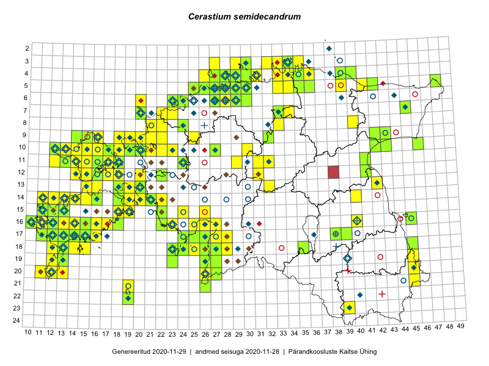

Cerastium semidecandrum
Uuendatud: 2016-12-01
Kaardile koondatud taksonid: Cerastium semidecandrum L.

Kaart põhineb 305 kirjel, neist vaatlusi 304 ja eksemplare 1.
Kuvatud viited 20 esimesele andmebaasikirjele, ülejäänud PlutoFis
- Peedu Saar: 2015-05-14: 10-42: ala
- Peedu Saar, Liina Oja: 2015-05-20: 18-27: ala
- Peedu Saar, Liina Oja: 2015-05-15: 16-23: ala
- Peedu Saar, Liina Oja: 2015-05-21: 16-25: ala
- Peedu Saar, Toomas Kukk: 2015-05-28: 11-17: ala
- Peedu Saar, Toomas Kukk: 2015-05-28: 10-15: ala
- Peedu Saar, Toomas Kukk: 2015-05-27: 09-14: ala
- Peedu Saar, Toomas Kukk: 2015-05-27: 09-15: ala
- Peedu Saar, Toomas Kukk: 2015-05-27: 09-16: ala
- Toomas Kukk, Eerik Leibak: 2015-08-09: 14-15: ala
- Peedu Saar, Toomas Kukk: 2015-05-26: 10-16: ala
- Peedu Saar, Toomas Kukk: 2015-05-26: 10-17: ala
- Ott Luuk, Jaak-Albert Metsoja: 2015-05-27: 12-22: ala
- Rein Kalamees, Kersti Püssa: 2015-05-28: 20-45: ala
- Peedu Saar, Liina Oja: 2015-06-09: 17-27: ala
- Toomas Kukk, Eerik Leibak: 2015-08-11: 09-15: ala
- Rein Kalamees, Kersti Püssa: 2015-06-30: 04-31: ala
- Toomas Kukk, Tiit Hallikma: 2015-06-01: 07-45: ala
- Toomas Kukk: 2015-06-19: 06-27: ala
- Toomas Kukk, Mari Reitalu: 2014-06-20: 16-12: ala